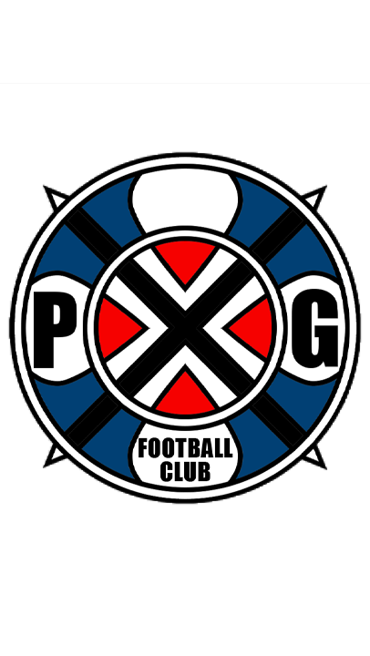

Paris X Gen · Official Database
PXG TEAM — Domine o campo.
Central oficial de jogadores. Consulte atributos, confira bônus e penalidades, copie fichas durante a sessão.
P ✕ G FOOTBALL CLUB
4Fichas
16Perícias positivas
1–30Escala de atributo

PLAYER DATABASE · Fichas, perícias e habilidades.
Central oficial de jogadores. Consulte atributos, confira bônus e penalidades, copie fichas durante a sessão.